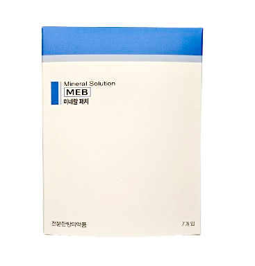
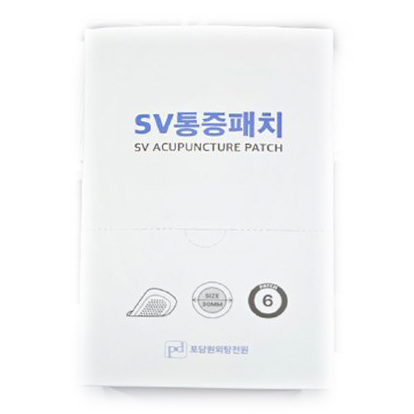
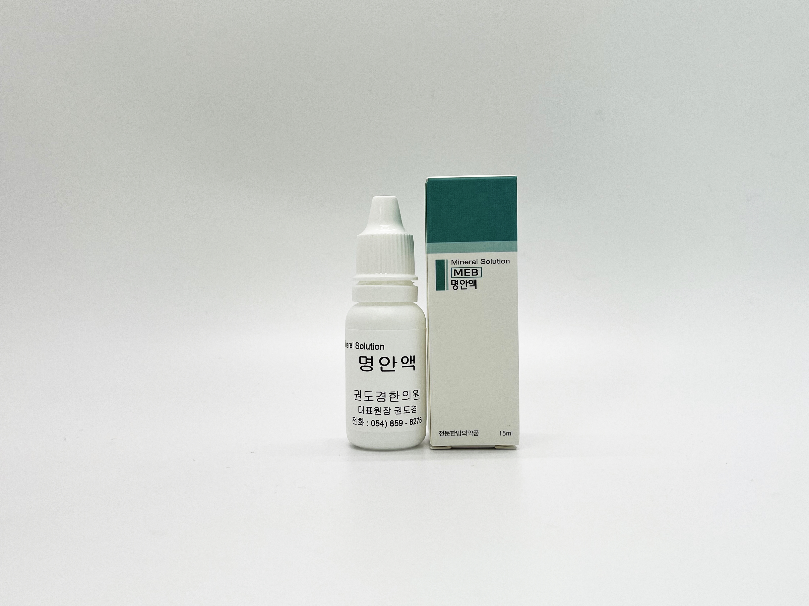
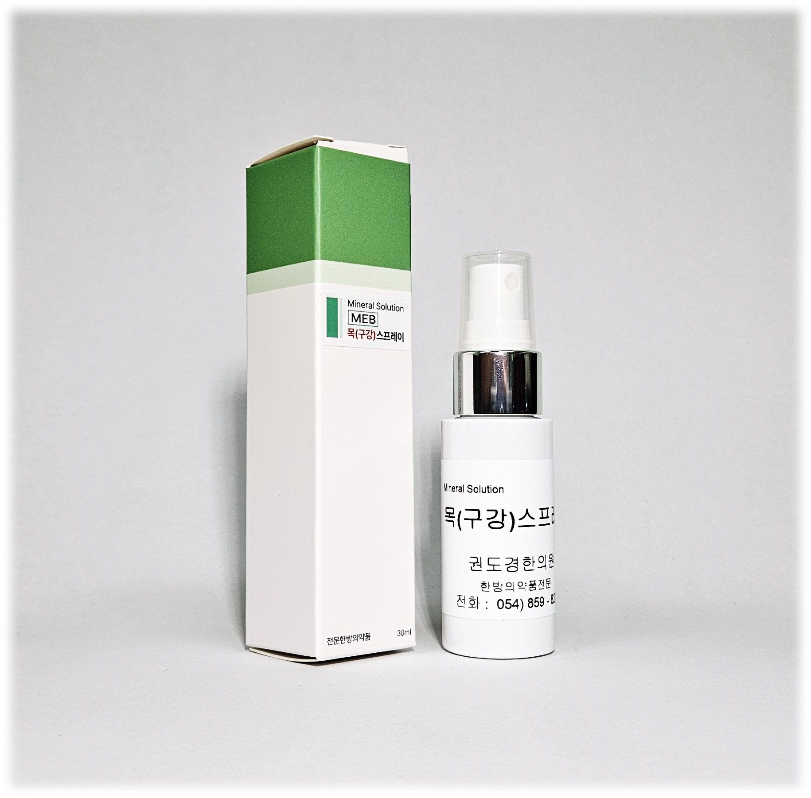

먹고, 뿌리고, 붙이는 신개념 처방.
독성 중금속을 완벽히 제거하고 흡수율을 극대화한 천연 복합 미네랄이 저하된 세포의 회복과 혈당·통증 관리를 돕습니다.
점토 광물을 수비법(水飛法)으로 가공하여 복합 미네랄 성분을 추출한 신개념 약용 광물 농축액입니다.




주소: 경기도 고양시 일산서구 고양대로 726, 4층 우성한의원
주차 안내: 일산제1공영주차장 (지도상 건물 우측 이용 시 1시간 정산 지원)
• 평일: 09:30 ~ 19:00 (점심 13:00 ~ 14:00)
• 목·토: 09:30 ~ 14:00 (점심시간 없이 연속진료)
• 일요일 및 공휴일: 휴진